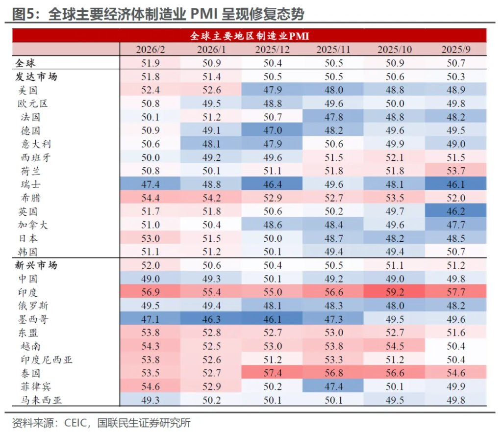

1-2月进出口以两位数增速闪耀登场，印证了开年外贸的强现实，但更重要的是这一超预期下的强现实将如何演绎？我们认为除季节性因素之外，海外资本开支周期、区域开拓，以及光伏出口退税下的抢出口则是三个额外支撑。
从纵向看，尽管存在春节因素的扰动，但对比历史同期，1-2月出口增速（21.8%）在近十年间仅略低于2018和2021年，处于季节性高位；从横向看，1-2月我国出口相较韩国、越南等主要出口国家的高增长同样“不落下风”。
我们在去年的年终报告《2026年中国宏观展望：十问十答》中提示，今年“出口进”是贯穿宏观经济的核心线索之一，1-2月出口的亮眼表现已对此形成初步印证。但在闪耀的开年数据映射下，今年出口究竟能“进”到什么程度？

开年出口强劲的背后，存在春节错位效应的短期扰动。从历史经验来看，由于制造商通常会在春节前加大出口，因此春节时点靠后往往会抬高1-2月出口、压低3月出口表现。今年春节较去年延迟近20天，进一步推动了1-2月企业的抢订单行为。

除了季节性因素以外，还有哪些不寻常的因素支撑出口的高增？
其一，出口的强势表现与海外资本开支周期形成强映射。年初以来全球主要经济体制造业景气度普遍改善，全球制造业PMI一度跃升至51.9%。主要经济体如美国、欧元区等均重回荣枯线以上，外部需求回暖趋势清晰，对我国出口形成明显拉动，这一点从年初韩国出口的亮眼表现也能得到印证。 

其二，企业订单加速转移新兴市场，对非洲出口再度领跑。1-2月对非出口增速接近50%，仅略低于去年9月的阶段性高位，成为我国出口重要增长极；同时，以东盟、中国香港为代表的转口贸易以及欧洲市场均保持两位数高增，共同构成年初出口的核心拉动力量；

其三，光伏出口退税取消或拉动部分行业“抢出口”。受4月光伏出口退税政策调整预期影响，企业存在一定提前出货行为，带动1-2月新能源汽车、电力电子相关设备、塑料玻璃等相关产业链出口明显走强。

相对出口的强劲，进口同样“不落下风”，反映内需存在一定修复态势。虽然1-2月进口增速靠前的产品仍主要以自动数据处理设备、集成电路等高新技术产品和机电产品为主，科技属性更高，但传统内需和资源品进口增速也在逐步回温。而且从量价上来看，相对去年，铁矿砂、原油、褐煤等多数产品进口数量同比增速出现改善，不完全是价格拉动，这意味着内需呈现一定修复态势，不过整体增速依然略弱于出口。

往后看，在出口强于进口的背景下，高贸易顺差格局有望延续。这一方面有望为“十五五”开局下的经济增长提供平稳支撑；另一方面，经常账户顺差的高增也将为汇率提供坚实基本面支撑，带动人民币升值。
本文来源：国联民生陶川团队